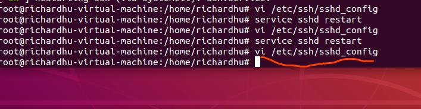
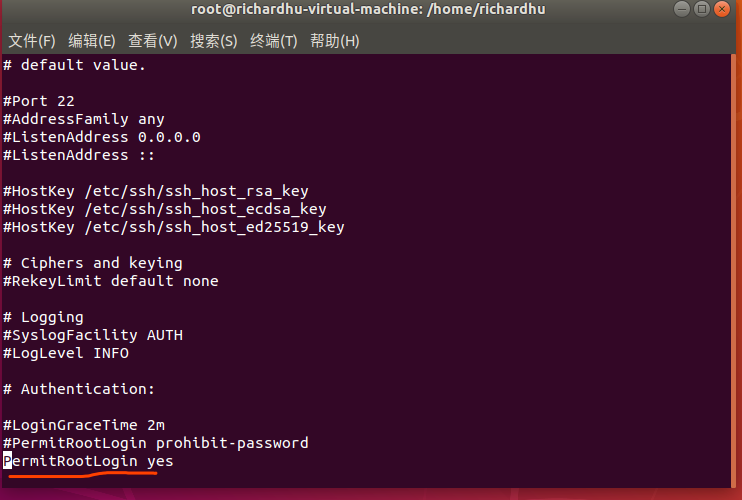

#做备份root@richardhu-virtual-machine:~# cd /etc/aptroot@richardhu-virtual-machine:/etc/apt# lsapt.conf.d preferences.d sources.list sources.list.d trusted.gpg.droot@richardhu-virtual-machine:/etc/apt# ls -la总用量 36drwxr-xr-x 6 root root 4096 5月 13 2019 .drwxr-xr-x 126 root root 12288 12月 30 14:34 ..drwxr-xr-x 2 root root 4096 12月 30 14:31 apt.conf.ddrwxr-xr-x 2 root root 4096 4月 20 2018 preferences.d-rw-rw-r-- 1 root root 2904 5月 13 2019 sources.listdrwxr-xr-x 2 root root 4096 4月 20 2018 sources.list.ddrwxr-xr-x 2 root root 4096 2月 10 2019 trusted.gpg.droot@richardhu-virtual-machine:/etc/apt# cp sources.list sources.list_bak====================================================================================================================删除原来国外源，增加以下源:deb <a href="http://mirrors.ustc.edu.cn/ubuntu/"><span class="s1">http://mirrors.ustc.edu.cn/ubuntu/</span></a> xenial main restricted universe multiversedeb <a href="http://mirrors.ustc.edu.cn/ubuntu/"><span class="s1">http://mirrors.ustc.edu.cn/ubuntu/</span></a> xenial-security main restricted universe multiversedeb <a href="http://mirrors.ustc.edu.cn/ubuntu/"><span class="s1">http://mirrors.ustc.edu.cn/ubuntu/</span></a> xenial-updates main restricted universe multiversedeb <a href="http://mirrors.ustc.edu.cn/ubuntu/"><span class="s1">http://mirrors.ustc.edu.cn/ubuntu/</span></a> xenial-proposed main restricted universe multiversedeb <a href="http://mirrors.ustc.edu.cn/ubuntu/"><span class="s1">http://mirrors.ustc.edu.cn/ubuntu/</span></a> xenial-backports main restricted universe multiversedeb-src <a href="http://mirrors.ustc.edu.cn/ubuntu/"><span class="s1">http://mirrors.ustc.edu.cn/ubuntu/</span></a> xenial main restricted universe multiversedeb-src <a href="http://mirrors.ustc.edu.cn/ubuntu/"><span class="s1">http://mirrors.ustc.edu.cn/ubuntu/</span></a> xenial-security main restricted universe multiversedeb-src <a href="http://mirrors.ustc.edu.cn/ubuntu/"><span class="s1">http://mirrors.ustc.edu.cn/ubuntu/</span></a> xenial-updates main restricted universe multiversedeb-src <a href="http://mirrors.ustc.edu.cn/ubuntu/"><span class="s1">http://mirrors.ustc.edu.cn/ubuntu/</span></a> xenial-proposed main restricted universe multiversedeb-src <a href="http://mirrors.ustc.edu.cn/ubuntu/"><span class="s1">http://mirrors.ustc.edu.cn/ubuntu/</span></a> xenial-backports main restricted universe multiverse====================================================================================================================root@richardhu-virtual-machine:/etc/apt# vi sources.listroot@richardhu-virtual-machine:/etc/apt# apt update获取:1 http://mirrors.ustc.edu.cn/ubuntu xenial InRelease [247 kB]获取:2 http://mirrors.ustc.edu.cn/ubuntu xenial-security InRelease [109 kB]获取:3 http://mirrors.ustc.edu.cn/ubuntu xenial-updates InRelease [109 kB]获取:4 http://mirrors.ustc.edu.cn/ubuntu xenial-proposed InRelease [260 kB]获取:5 http://mirrors.ustc.edu.cn/ubuntu xenial-backports InRelease [107 kB]获取:6 http://mirrors.ustc.edu.cn/ubuntu xenial/multiverse Sources [179 kB]获取:7 http://mirrors.ustc.edu.cn/ubuntu xenial/universe Sources [7,728 kB]获取:8 http://mirrors.ustc.edu.cn/ubuntu xenial/main Sources [868 kB]获取:9 http://mirrors.ustc.edu.cn/ubuntu xenial/restricted Sources [4,808 B]获取:10 http://mirrors.ustc.edu.cn/ubuntu xenial/main amd64 Packages [1,201 kB]获取:11 http://mirrors.ustc.edu.cn/ubuntu xenial/main i386 Packages [1,196 kB]获取:12 http://mirrors.ustc.edu.cn/ubuntu xenial/main Translation-en [568 kB]获取:13 http://mirrors.ustc.edu.cn/ubuntu xenial/main Translation-zh_CN [74.8 kB]获取:14 http://mirrors.ustc.edu.cn/ubuntu xenial/main amd64 DEP-11 Metadata [733 kB]获取:15 http://mirrors.ustc.edu.cn/ubuntu xenial/main DEP-11 64x64 Icons [409 kB]获取:16 http://mirrors.ustc.edu.cn/ubuntu xenial/restricted i386 Packages [8,684 B]获取:17 http://mirrors.ustc.edu.cn/ubuntu xenial/restricted amd64 Packages [8,344 B]获取:18 http://mirrors.ustc.edu.cn/ubuntu xenial/restricted Translation-zh_CN [1,652 B]获取:19 http://mirrors.ustc.edu.cn/ubuntu xenial/restricted Translation-en [2,908 B]获取:20 http://mirrors.ustc.edu.cn/ubuntu xenial/restricted amd64 DEP-11 Metadata [186 B]获取:21 http://mirrors.ustc.edu.cn/ubuntu xenial/universe amd64 Packages [7,532 kB]获取:22 http://mirrors.ustc.edu.cn/ubuntu xenial/universe i386 Packages [7,512 kB]获取:23 http://mirrors.ustc.edu.cn/ubuntu xenial/universe Translation-zh_CN [172 kB]获取:24 http://mirrors.ustc.edu.cn/ubuntu xenial/universe Translation-en [4,354 kB]获取:25 http://mirrors.ustc.edu.cn/ubuntu xenial/universe amd64 DEP-11 Metadata [3,410 kB]获取:26 http://mirrors.ustc.edu.cn/ubuntu xenial/universe DEP-11 64x64 Icons [7,448 kB]获取:27 http://mirrors.ustc.edu.cn/ubuntu xenial/multiverse i386 Packages [140 kB]获取:28 http://mirrors.ustc.edu.cn/ubuntu xenial/multiverse amd64 Packages [144 kB]获取:29 http://mirrors.ustc.edu.cn/ubuntu xenial/multiverse Translation-zh_CN [4,984 B]获取:30 http://mirrors.ustc.edu.cn/ubuntu xenial/multiverse Translation-en [106 kB]获取:31 http://mirrors.ustc.edu.cn/ubuntu xenial/multiverse amd64 DEP-11 Metadata [63.8 kB]获取:32 http://mirrors.ustc.edu.cn/ubuntu xenial/multiverse DEP-11 64x64 Icons [230 kB]获取:33 http://mirrors.ustc.edu.cn/ubuntu xenial-security/restricted Sources [2,116 B]获取:34 http://mirrors.ustc.edu.cn/ubuntu xenial-security/multiverse Sources [3,408 B]获取:35 http://mirrors.ustc.edu.cn/ubuntu xenial-security/main Sources [158 kB]获取:36 http://mirrors.ustc.edu.cn/ubuntu xenial-security/universe Sources [115 kB]获取:37 http://mirrors.ustc.edu.cn/ubuntu xenial-security/main amd64 Packages [797 kB]获取:38 http://mirrors.ustc.edu.cn/ubuntu xenial-security/main i386 Packages [623 kB]获取:39 http://mirrors.ustc.edu.cn/ubuntu xenial-security/main Translation-en [306 kB]获取:40 http://mirrors.ustc.edu.cn/ubuntu xenial-security/main amd64 DEP-11 Metadata [74.8 kB]获取:41 http://mirrors.ustc.edu.cn/ubuntu xenial-security/main DEP-11 48x48 Icons [17.6 kB]获取:42 http://mirrors.ustc.edu.cn/ubuntu xenial-security/main DEP-11 64x64 Icons [79.6 kB]获取:43 http://mirrors.ustc.edu.cn/ubuntu xenial-security/restricted amd64 Packages [7,204 B]获取:44 http://mirrors.ustc.edu.cn/ubuntu xenial-security/restricted i386 Packages [7,224 B]获取:45 http://mirrors.ustc.edu.cn/ubuntu xenial-security/restricted Translation-en [2,152 B]获取:46 http://mirrors.ustc.edu.cn/ubuntu xenial-security/restricted amd64 DEP-11 Metadata [200 B]获取:47 http://mirrors.ustc.edu.cn/ubuntu xenial-security/universe i386 Packages [402 kB]获取:48 http://mirrors.ustc.edu.cn/ubuntu xenial-security/universe amd64 Packages [466 kB]获取:49 http://mirrors.ustc.edu.cn/ubuntu xenial-security/universe Translation-en [192 kB]获取:50 http://mirrors.ustc.edu.cn/ubuntu xenial-security/universe amd64 DEP-11 Metadata [124 kB]获取:51 http://mirrors.ustc.edu.cn/ubuntu xenial-security/universe DEP-11 48x48 Icons [5,919 B]获取:52 http://mirrors.ustc.edu.cn/ubuntu xenial-security/universe DEP-11 64x64 Icons [194 kB]获取:53 http://mirrors.ustc.edu.cn/ubuntu xenial-security/multiverse amd64 Packages [5,728 B]获取:54 http://mirrors.ustc.edu.cn/ubuntu xenial-security/multiverse i386 Packages [5,888 B]获取:55 http://mirrors.ustc.edu.cn/ubuntu xenial-security/multiverse Translation-en [2,708 B]获取:56 http://mirrors.ustc.edu.cn/ubuntu xenial-security/multiverse amd64 DEP-11 Metadata [2,464 B]获取:57 http://mirrors.ustc.edu.cn/ubuntu xenial-security/multiverse DEP-11 48x48 Icons [29 B]获取:58 http://mirrors.ustc.edu.cn/ubuntu xenial-security/multiverse DEP-11 64x64 Icons [2,638 B]获取:59 http://mirrors.ustc.edu.cn/ubuntu xenial-updates/main Sources [344 kB]获取:60 http://mirrors.ustc.edu.cn/ubuntu xenial-updates/multiverse Sources [8,752 B]获取:61 http://mirrors.ustc.edu.cn/ubuntu xenial-updates/universe Sources [264 kB]获取:62 http://mirrors.ustc.edu.cn/ubuntu xenial-updates/restricted Sources [2,536 B]获取:63 http://mirrors.ustc.edu.cn/ubuntu xenial-updates/main i386 Packages [888 kB]获取:64 http://mirrors.ustc.edu.cn/ubuntu xenial-updates/main amd64 Packages [1,082 kB]获取:65 http://mirrors.ustc.edu.cn/ubuntu xenial-updates/main Translation-en [416 kB]获取:66 http://mirrors.ustc.edu.cn/ubuntu xenial-updates/main amd64 DEP-11 Metadata [322 kB]获取:67 http://mirrors.ustc.edu.cn/ubuntu xenial-updates/main DEP-11 48x48 Icons [17.6 kB]获取:68 http://mirrors.ustc.edu.cn/ubuntu xenial-updates/main DEP-11 64x64 Icons [236 kB]获取:69 http://mirrors.ustc.edu.cn/ubuntu xenial-updates/restricted amd64 Packages [7,616 B]获取:70 http://mirrors.ustc.edu.cn/ubuntu xenial-updates/restricted i386 Packages [7,580 B]获取:71 http://mirrors.ustc.edu.cn/ubuntu xenial-updates/restricted Translation-en [2,272 B]获取:72 http://mirrors.ustc.edu.cn/ubuntu xenial-updates/restricted amd64 DEP-11 Metadata [157 B]获取:73 http://mirrors.ustc.edu.cn/ubuntu xenial-updates/universe i386 Packages [700 kB]获取:74 http://mirrors.ustc.edu.cn/ubuntu xenial-updates/universe amd64 Packages [771 kB]获取:75 http://mirrors.ustc.edu.cn/ubuntu xenial-updates/universe Translation-en [324 kB]获取:76 http://mirrors.ustc.edu.cn/ubuntu xenial-updates/universe amd64 DEP-11 Metadata [274 kB]获取:77 http://mirrors.ustc.edu.cn/ubuntu xenial-updates/universe DEP-11 48x48 Icons [32.0 kB]获取:78 http://mirrors.ustc.edu.cn/ubuntu xenial-updates/universe DEP-11 64x64 Icons [411 kB]获取:79 http://mirrors.ustc.edu.cn/ubuntu xenial-updates/multiverse amd64 Packages [16.8 kB]获取:80 http://mirrors.ustc.edu.cn/ubuntu xenial-updates/multiverse i386 Packages [15.9 kB]获取:81 http://mirrors.ustc.edu.cn/ubuntu xenial-updates/multiverse Translation-en [8,468 B]获取:82 http://mirrors.ustc.edu.cn/ubuntu xenial-updates/multiverse amd64 DEP-11 Metadata [5,976 B]获取:83 http://mirrors.ustc.edu.cn/ubuntu xenial-updates/multiverse DEP-11 48x48 Icons [29 B]获取:84 http://mirrors.ustc.edu.cn/ubuntu xenial-updates/multiverse DEP-11 64x64 Icons [14.3 kB]获取:85 http://mirrors.ustc.edu.cn/ubuntu xenial-proposed/main Sources [16.8 kB]获取:86 http://mirrors.ustc.edu.cn/ubuntu xenial-proposed/universe Sources [5,740 B]获取:87 http://mirrors.ustc.edu.cn/ubuntu xenial-proposed/main amd64 Packages [54.5 kB]获取:88 http://mirrors.ustc.edu.cn/ubuntu xenial-proposed/main i386 Packages [39.4 kB]获取:89 http://mirrors.ustc.edu.cn/ubuntu xenial-proposed/main Translation-en [20.8 kB]获取:90 http://mirrors.ustc.edu.cn/ubuntu xenial-proposed/main Translation-zh_CN [74.8 kB]获取:91 http://mirrors.ustc.edu.cn/ubuntu xenial-proposed/main amd64 DEP-11 Metadata [208 B]获取:92 http://mirrors.ustc.edu.cn/ubuntu xenial-proposed/main DEP-11 48x48 Icons [29 B]获取:93 http://mirrors.ustc.edu.cn/ubuntu xenial-proposed/main DEP-11 64x64 Icons [29 B]获取:94 http://mirrors.ustc.edu.cn/ubuntu xenial-proposed/restricted Translation-zh_CN [1,652 B]获取:95 http://mirrors.ustc.edu.cn/ubuntu xenial-proposed/restricted amd64 DEP-11 Metadata [201 B]获取:96 http://mirrors.ustc.edu.cn/ubuntu xenial-proposed/universe i386 Packages [6,688 B]获取:97 http://mirrors.ustc.edu.cn/ubuntu xenial-proposed/universe amd64 Packages [8,768 B]获取:98 http://mirrors.ustc.edu.cn/ubuntu xenial-proposed/universe Translation-en [6,844 B]获取:99 http://mirrors.ustc.edu.cn/ubuntu xenial-proposed/universe Translation-zh_CN [172 kB]获取:100 http://mirrors.ustc.edu.cn/ubuntu xenial-proposed/universe amd64 DEP-11 Metadata [6,052 B]获取:101 http://mirrors.ustc.edu.cn/ubuntu xenial-proposed/universe DEP-11 48x48 Icons [29 B]获取:102 http://mirrors.ustc.edu.cn/ubuntu xenial-proposed/universe DEP-11 64x64 Icons [6,288 B]获取:103 http://mirrors.ustc.edu.cn/ubuntu xenial-proposed/multiverse Translation-zh_CN [4,984 B]获取:104 http://mirrors.ustc.edu.cn/ubuntu xenial-proposed/multiverse amd64 DEP-11 Metadata [2,468 B]获取:105 http://mirrors.ustc.edu.cn/ubuntu xenial-proposed/multiverse DEP-11 48x48 Icons [29 B]获取:106 http://mirrors.ustc.edu.cn/ubuntu xenial-proposed/multiverse DEP-11 64x64 Icons [2,638 B]获取:107 http://mirrors.ustc.edu.cn/ubuntu xenial-backports/universe Sources [7,120 B]获取:108 http://mirrors.ustc.edu.cn/ubuntu xenial-backports/main Sources [4,848 B]获取:109 http://mirrors.ustc.edu.cn/ubuntu xenial-backports/main i386 Packages [7,288 B]获取:110 http://mirrors.ustc.edu.cn/ubuntu xenial-backports/main amd64 Packages [7,280 B]获取:111 http://mirrors.ustc.edu.cn/ubuntu xenial-backports/main Translation-en [4,456 B]获取:112 http://mirrors.ustc.edu.cn/ubuntu xenial-backports/main amd64 DEP-11 Metadata [3,324 B]获取:113 http://mirrors.ustc.edu.cn/ubuntu xenial-backports/main DEP-11 48x48 Icons [29 B]获取:114 http://mirrors.ustc.edu.cn/ubuntu xenial-backports/main DEP-11 64x64 Icons [29 B]获取:115 http://mirrors.ustc.edu.cn/ubuntu xenial-backports/restricted amd64 DEP-11 Metadata [194 B]获取:116 http://mirrors.ustc.edu.cn/ubuntu xenial-backports/universe amd64 Packages [8,064 B]获取:117 http://mirrors.ustc.edu.cn/ubuntu xenial-backports/universe i386 Packages [7,744 B]获取:118 http://mirrors.ustc.edu.cn/ubuntu xenial-backports/universe Translation-en [4,328 B]获取:119 http://mirrors.ustc.edu.cn/ubuntu xenial-backports/universe amd64 DEP-11 Metadata [5,328 B]获取:120 http://mirrors.ustc.edu.cn/ubuntu xenial-backports/universe DEP-11 48x48 Icons [29 B]获取:121 http://mirrors.ustc.edu.cn/ubuntu xenial-backports/universe DEP-11 64x64 Icons [1,789 B]获取:122 http://mirrors.ustc.edu.cn/ubuntu xenial-backports/multiverse amd64 DEP-11 Metadata [216 B]获取:123 http://mirrors.ustc.edu.cn/ubuntu xenial-backports/multiverse DEP-11 64x64 Icons [29 B]已下载 55.2 MB，耗时 1分 11秒 (779 kB/s)正在读取软件包列表 完成正在分析软件包的依赖关系树正在读取状态信息 完成有 3 个软件包可以升级。请执行 ‘apt list --upgradable’ 来查看它们。$ssh -p 22 root@172.16.134.138root@172.16.134.138's password:Permission denied, please try again.root@172.16.134.138's password:Permission denied, please try again.root@172.16.134.138's password:解决


再重启服务:
service sshd restartroot@richardhu-virtual-machine:/etc/apt# apt install vim正在读取软件包列表 完成正在分析软件包的依赖关系树正在读取状态信息 完成有一些软件包无法被安装。如果您用的是 unstable 发行版，这也许是因为系统无法达到您要求的状态造成的。该版本中可能会有一些您需要的软件包尚未被创建或是它们已被从新到(Incoming)目录移出。下列信息可能会对解决问题有所帮助：下列软件包有未满足的依赖关系： vim : 依赖: vim-common (= 2:7.4.1689-3ubuntu1.3) 但是 2:8.0.1453-1ubuntu1.1 正要被安装E: 无法修正错误，因为您要求某些软件包保持现状，就是它们破坏了软件包间的依赖关系。解决:
https://blog.csdn.net/fcb_campnou/article/details/44851691
sudo apt-get purge vim-commonsudo apt-get updatesudo apt-get upgradesudo apt-get install vim====================================================================================================================#命令1root@richardhu-virtual-machine:/etc/apt# apt-get purge vim-common正在读取软件包列表 完成正在分析软件包的依赖关系树正在读取状态信息 完成下列软件包是自动安装的并且现在不需要了： linux-headers-4.18.0-15 linux-headers-4.18.0-15-generic linux-image-4.18.0-15-generic linux-modules-4.18.0-15-generic linux-modules-extra-4.18.0-15-generic使用'apt autoremove'来卸载它(它们)。下列软件包将被【卸载】： ubuntu-minimal* vim-common* vim-tiny*升级了 0 个软件包，新安装了 0 个软件包，要卸载 3 个软件包，有 3 个软件包未被升级。解压缩后将会空出 1,687 kB 的空间。您希望继续执行吗？ [Y/n] Y(正在读取数据库 系统当前共安装有 200714 个文件和目录。)正在卸载 ubuntu-minimal (1.417) 正在卸载 vim-tiny (2:8.0.1453-1ubuntu1.1) 正在卸载 vim-common (2:8.0.1453-1ubuntu1.1) 正在处理用于 mime-support (3.60ubuntu1) 的触发器 正在处理用于 desktop-file-utils (0.23-1ubuntu3.18.04.2) 的触发器 正在处理用于 man-db (2.8.3-2ubuntu0.1) 的触发器 正在处理用于 gnome-menus (3.13.3-11ubuntu1.1) 的触发器 正在处理用于 hicolor-icon-theme (0.17-2) 的触发器 (正在读取数据库 系统当前共安装有 200649 个文件和目录。)正在清除 vim-tiny (2:8.0.1453-1ubuntu1.1) 的配置文件 正在清除 vim-common (2:8.0.1453-1ubuntu1.1) 的配置文件 ====================================================================================================================root@richardhu-virtual-machine:/etc/apt# apt-get update命中:1 http://mirrors.ustc.edu.cn/ubuntu xenial InRelease命中:2 http://mirrors.ustc.edu.cn/ubuntu xenial-security InRelease命中:3 http://mirrors.ustc.edu.cn/ubuntu xenial-updates InRelease命中:4 http://mirrors.ustc.edu.cn/ubuntu xenial-proposed InRelease命中:5 http://mirrors.ustc.edu.cn/ubuntu xenial-backports InRelease正在读取软件包列表 完成====================================================================================================================root@richardhu-virtual-machine:/etc/apt# apt-get upgrade正在读取软件包列表 完成正在分析软件包的依赖关系树正在读取状态信息 完成正在计算更新 完成下列软件包是自动安装的并且现在不需要了： linux-headers-4.18.0-15 linux-headers-4.18.0-15-generic linux-image-4.18.0-15-generic linux-modules-4.18.0-15-generic linux-modules-extra-4.18.0-15-generic使用'apt autoremove'来卸载它(它们)。下列软件包将被升级： gir1.2-snapd-1 libsnapd-glib1 snapd升级了 3 个软件包，新安装了 0 个软件包，要卸载 0 个软件包，有 0 个软件包未被升级。需要下载 13.3 MB 的归档。解压缩后将会空出 2,281 kB 的空间。您希望继续执行吗？ [Y/n] Y获取:1 http://mirrors.ustc.edu.cn/ubuntu xenial-proposed/main amd64 gir1.2-snapd-1 amd64 1.49-0ubuntu0.16.04.1 [12.5 kB]获取:2 http://mirrors.ustc.edu.cn/ubuntu xenial-proposed/main amd64 libsnapd-glib1 amd64 1.49-0ubuntu0.16.04.1 [87.4 kB]获取:3 http://mirrors.ustc.edu.cn/ubuntu xenial-proposed/main amd64 snapd amd64 2.42.1 [13.2 MB]已下载 13.3 MB，耗时 55秒 (240 kB/s)(正在读取数据库 系统当前共安装有 200647 个文件和目录。)正准备解包 /gir1.2-snapd-1_1.49-0ubuntu0.16.04.1_amd64.deb ...正在将 gir1.2-snapd-1:amd64 (1.49-0ubuntu0.16.04.1) 解包到 (1.43-0ubuntu0.18.04.1) 上 正准备解包 /libsnapd-glib1_1.49-0ubuntu0.16.04.1_amd64.deb ...正在将 libsnapd-glib1:amd64 (1.49-0ubuntu0.16.04.1) 解包到 (1.43-0ubuntu0.18.04.1) 上 正准备解包 /snapd_2.42.1_amd64.deb ...正在将 snapd (2.42.1) 解包到 (2.37.4+18.04.1) 上 正在处理用于 mime-support (3.60ubuntu1) 的触发器 正在处理用于 desktop-file-utils (0.23-1ubuntu3.18.04.2) 的触发器 正在设置 snapd (2.42.1) 正在安装新版本配置文件 /etc/apparmor.d/usr.lib.snapd.snap-confine.real 正在安装新版本配置文件 /etc/xdg/autostart/snap-userd-autostart.desktop snapd.failure.service is a disabled or a static unit, not starting it.snapd.snap-repair.service is a disabled or a static unit, not starting it.正在设置 libsnapd-glib1:amd64 (1.49-0ubuntu0.16.04.1) 正在处理用于 libc-bin (2.27-3ubuntu1) 的触发器 正在处理用于 man-db (2.8.3-2ubuntu0.1) 的触发器 正在设置 gir1.2-snapd-1:amd64 (1.49-0ubuntu0.16.04.1) 正在处理用于 gnome-menus (3.13.3-11ubuntu1.1) 的触发器 ====================================================================================================================root@richardhu-virtual-machine:/etc/apt# apt-get install vim正在读取软件包列表 完成正在分析软件包的依赖关系树正在读取状态信息 完成下列软件包是自动安装的并且现在不需要了： linux-headers-4.18.0-15 linux-headers-4.18.0-15-generic linux-image-4.18.0-15-generic linux-modules-4.18.0-15-generic linux-modules-extra-4.18.0-15-generic使用'apt autoremove'来卸载它(它们)。将会同时安装下列软件： libpython3.5 libpython3.5-minimal libpython3.5-stdlib libreadline6 vim-common vim-runtime建议安装： ctags vim-doc vim-scripts vim-gnome-py2 | vim-gtk-py2 | vim-gtk3-py2 | vim-athena-py2 | vim-nox-py2下列软件包将被【卸载】： xxd下列【新】软件包将被安装： libpython3.5 libpython3.5-minimal libpython3.5-stdlib libreadline6 vim vim-common vim-runtime升级了 0 个软件包，新安装了 7 个软件包，要卸载 1 个软件包，有 0 个软件包未被升级。需要下载 10.5 MB 的归档。解压缩后会消耗 49.1 MB 的额外空间。您希望继续执行吗？ [Y/n] Y获取:1 http://mirrors.ustc.edu.cn/ubuntu xenial-security/main amd64 libpython3.5-minimal amd64 3.5.2-2ubuntu0~16.04.9 [524 kB]获取:2 http://mirrors.ustc.edu.cn/ubuntu xenial/main amd64 libreadline6 amd64 6.3-8ubuntu2 [117 kB]获取:3 http://mirrors.ustc.edu.cn/ubuntu xenial-security/main amd64 libpython3.5-stdlib amd64 3.5.2-2ubuntu0~16.04.9 [2,137 kB]获取:4 http://mirrors.ustc.edu.cn/ubuntu xenial-security/main amd64 vim-common amd64 2:7.4.1689-3ubuntu1.3 [103 kB]获取:5 http://mirrors.ustc.edu.cn/ubuntu xenial-security/main amd64 libpython3.5 amd64 3.5.2-2ubuntu0~16.04.9 [1,360 kB]获取:6 http://mirrors.ustc.edu.cn/ubuntu xenial-security/main amd64 vim-runtime all 2:7.4.1689-3ubuntu1.3 [5,179 kB]获取:7 http://mirrors.ustc.edu.cn/ubuntu xenial-security/main amd64 vim amd64 2:7.4.1689-3ubuntu1.3 [1,036 kB]已下载 10.5 MB，耗时 47秒 (225 kB/s)(正在读取数据库 系统当前共安装有 200649 个文件和目录。)正在卸载 xxd (2:8.0.1453-1ubuntu1.1) 正在选中未选择的软件包 libpython3.5-minimal:amd64。(正在读取数据库 系统当前共安装有 200639 个文件和目录。)正准备解包 /0-libpython3.5-minimal_3.5.2-2ubuntu0~16.04.9_amd64.deb ...正在解包 libpython3.5-minimal:amd64 (3.5.2-2ubuntu0~16.04.9) 正在选中未选择的软件包 libreadline6:amd64。正准备解包 /1-libreadline6_6.3-8ubuntu2_amd64.deb ...正在解包 libreadline6:amd64 (6.3-8ubuntu2) 正在选中未选择的软件包 libpython3.5-stdlib:amd64。正准备解包 /2-libpython3.5-stdlib_3.5.2-2ubuntu0~16.04.9_amd64.deb ...正在解包 libpython3.5-stdlib:amd64 (3.5.2-2ubuntu0~16.04.9) 正在选中未选择的软件包 vim-common。正准备解包 /3-vim-common_2%3a7.4.1689-3ubuntu1.3_amd64.deb ...正在解包 vim-common (2:7.4.1689-3ubuntu1.3) 正在选中未选择的软件包 libpython3.5:amd64。正准备解包 /4-libpython3.5_3.5.2-2ubuntu0~16.04.9_amd64.deb ...正在解包 libpython3.5:amd64 (3.5.2-2ubuntu0~16.04.9) 正在选中未选择的软件包 vim-runtime。正准备解包 /5-vim-runtime_2%3a7.4.1689-3ubuntu1.3_all.deb ...正在添加 vim-runtime 导致 /usr/share/vim/vim74/doc/help.txt 转移到 /usr/share/vim/vim74/doc/help.txt.vim-tiny正在添加 vim-runtime 导致 /usr/share/vim/vim74/doc/tags 转移到 /usr/share/vim/vim74/doc/tags.vim-tiny正在解包 vim-runtime (2:7.4.1689-3ubuntu1.3) 正在选中未选择的软件包 vim。正准备解包 /6-vim_2%3a7.4.1689-3ubuntu1.3_amd64.deb ...正在解包 vim (2:7.4.1689-3ubuntu1.3) 正在处理用于 mime-support (3.60ubuntu1) 的触发器 正在处理用于 desktop-file-utils (0.23-1ubuntu3.18.04.2) 的触发器 正在处理用于 libc-bin (2.27-3ubuntu1) 的触发器 正在设置 vim-common (2:7.4.1689-3ubuntu1.3) 正在处理用于 man-db (2.8.3-2ubuntu0.1) 的触发器 正在设置 vim-runtime (2:7.4.1689-3ubuntu1.3) 正在处理用于 gnome-menus (3.13.3-11ubuntu1.1) 的触发器 正在处理用于 hicolor-icon-theme (0.17-2) 的触发器 正在设置 libreadline6:amd64 (6.3-8ubuntu2) 正在设置 libpython3.5-minimal:amd64 (3.5.2-2ubuntu0~16.04.9) 正在设置 libpython3.5-stdlib:amd64 (3.5.2-2ubuntu0~16.04.9) 正在设置 libpython3.5:amd64 (3.5.2-2ubuntu0~16.04.9) 正在设置 vim (2:7.4.1689-3ubuntu1.3) update-alternatives: 使用 /usr/bin/vim.basic 来在自动模式中提供 /usr/bin/vim (vim)update-alternatives: 使用 /usr/bin/vim.basic 来在自动模式中提供 /usr/bin/vimdiff (vimdiff)update-alternatives: 使用 /usr/bin/vim.basic 来在自动模式中提供 /usr/bin/rvim (rvim)update-alternatives: 使用 /usr/bin/vim.basic 来在自动模式中提供 /usr/bin/rview (rview)update-alternatives: 使用 /usr/bin/vim.basic 来在自动模式中提供 /usr/bin/vi (vi)update-alternatives: 使用 /usr/bin/vim.basic 来在自动模式中提供 /usr/bin/view (view)update-alternatives: 使用 /usr/bin/vim.basic 来在自动模式中提供 /usr/bin/ex (ex)正在处理用于 libc-bin (2.27-3ubuntu1) 的触发器 root@richardhu-virtual-machine:/etc/apt# which vim/usr/bin/vim====================================================================================================================root@richardhu-virtual-machine:/etc/apt# apt install mysql-server mysql-client正在读取软件包列表 完成正在分析软件包的依赖关系树正在读取状态信息 完成下列软件包是自动安装的并且现在不需要了： linux-headers-4.18.0-15 linux-headers-4.18.0-15-generic linux-image-4.18.0-15-generic linux-modules-4.18.0-15-generic linux-modules-extra-4.18.0-15-generic使用'apt autoremove'来卸载它(它们)。正准备解包 /mysql-server-5.7_5.7.28-0ubuntu0.16.04.2_amd64.deb ...正在解包 mysql-server-5.7 (5.7.28-0ubuntu0.16.04.2) 正在选中未选择的软件包 libhtml-template-perl。正准备解包 /libhtml-template-perl_2.95-2_all.deb ...正在解包 libhtml-template-perl (2.95-2) 正在选中未选择的软件包 mysql-client。正准备解包 /mysql-client_5.7.28-0ubuntu0.16.04.2_all.deb ...正在解包 mysql-client (5.7.28-0ubuntu0.16.04.2) 正在选中未选择的软件包 mysql-server。正准备解包 /mysql-server_5.7.28-0ubuntu0.16.04.2_all.deb ...正在解包 mysql-server (5.7.28-0ubuntu0.16.04.2) 正在设置 libhtml-template-perl (2.95-2) 正在处理用于 ureadahead (0.100.0-20) 的触发器 正在处理用于 libc-bin (2.27-3ubuntu1) 的触发器 正在设置 libaio1:amd64 (0.3.110-2) 正在设置 libevent-core-2.0-5:amd64 (2.0.21-stable-2ubuntu0.16.04.1) 正在处理用于 systemd (237-3ubuntu10.29) 的触发器 正在处理用于 man-db (2.8.3-2ubuntu0.1) 的触发器 正在设置 insserv (1.14.0-5ubuntu3) 正在设置 mysql-client-core-5.7 (5.7.28-0ubuntu0.16.04.2) 正在设置 mysql-server-core-5.7 (5.7.28-0ubuntu0.16.04.2) 正在设置 sysv-rc (2.88dsf-59.3ubuntu2) 正在设置 mysql-client (5.7.28-0ubuntu0.16.04.2) 正在设置 mysql-server-5.7 (5.7.28-0ubuntu0.16.04.2) update-alternatives: 使用 /etc/mysql/mysql.cnf 来在自动模式中提供 /etc/mysql/my.cnf (my.cnf)Renaming removed key_buffer and myisam-recover options (if present)Created symlink /etc/systemd/system/multi-user.target.wants/mysql.service → /lib/systemd/system/mysql.service.正在设置 mysql-server (5.7.28-0ubuntu0.16.04.2) 正在处理用于 libc-bin (2.27-3ubuntu1) 的触发器 正在处理用于 systemd (237-3ubuntu10.29) 的触发器 正在处理用于 ureadahead (0.100.0-20) 的触发器 ====================================================================================================================上面安装的中途会叫你设置密码,这里设置为rootroot@richardhu-virtual-machine:/etc/apt# mysql -uroot -pEnter password:Welcome to the MySQL monitor. Commands end with ; or \g.Your MySQL connection id is 4Server version: 5.7.28-0ubuntu0.16.04.2 (Ubuntu)Copyright (c) 2000, 2019, Oracle and/or its affiliates. All rights reserved.Oracle is a registered trademark of Oracle Corporation and/or itsaffiliates. Other names may be trademarks of their respectiveowners.Type 'help;' or '\h' for help. Type '\c' to clear the current input statement.mysql> show databases;+--------------------+| Database |+--------------------+| information_schema || mysql || performance_schema || sys |+--------------------+4 rows in set (0.00 sec)mysql> exitBye====================================================================================================================root@richardhu-virtual-machine:/etc/apt# apt install telent正在读取软件包列表 完成正在分析软件包的依赖关系树正在读取状态信息 完成E: 无法定位软件包 telentroot@richardhu-virtual-machine:/etc/apt# apt-get update命中:1 http://mirrors.ustc.edu.cn/ubuntu xenial InRelease命中:2 http://mirrors.ustc.edu.cn/ubuntu xenial-security InRelease命中:3 http://mirrors.ustc.edu.cn/ubuntu xenial-updates InRelease命中:4 http://mirrors.ustc.edu.cn/ubuntu xenial-proposed InRelease命中:5 http://mirrors.ustc.edu.cn/ubuntu xenial-backports InRelease正在读取软件包列表 完成root@richardhu-virtual-machine:/etc/apt# apt install telent正在读取软件包列表 完成正在分析软件包的依赖关系树正在读取状态信息 完成E: 无法定位软件包 telent问题的解决:
https://www.jianshu.com/p/1c6d99e078b6
apt-get install openbsd-inetdapt-get install telnetd过程如下:
root@richardhu-virtual-machine:/etc/apt# apt install openbsd-inetd正在读取软件包列表 完成正在分析软件包的依赖关系树正在读取状态信息 完成下列软件包是自动安装的并且现在不需要了： linux-headers-4.18.0-15 linux-headers-4.18.0-15-generic linux-image-4.18.0-15-generic linux-modules-4.18.0-15-generic linux-modules-extra-4.18.0-15-generic使用'apt autoremove'来卸载它(它们)。将会同时安装下列软件： tcpd下列【新】软件包将被安装： openbsd-inetd tcpd升级了 0 个软件包，新安装了 2 个软件包，要卸载 0 个软件包，有 0 个软件包未被升级。需要下载 49.2 kB 的归档。解压缩后会消耗 201 kB 的额外空间。您希望继续执行吗？ [Y/n] Y获取:1 http://mirrors.ustc.edu.cn/ubuntu xenial/main amd64 tcpd amd64 7.6.q-25 [23.0 kB]获取:2 http://mirrors.ustc.edu.cn/ubuntu xenial/main amd64 openbsd-inetd amd64 0.20140418-2 [26.2 kB]已下载 49.2 kB，耗时 25秒 (1,998 B/s)正在选中未选择的软件包 tcpd。(正在读取数据库 系统当前共安装有 203611 个文件和目录。)正准备解包 /tcpd_7.6.q-25_amd64.deb ...正在解包 tcpd (7.6.q-25) 正在选中未选择的软件包 openbsd-inetd。正准备解包 /openbsd-inetd_0.20140418-2_amd64.deb ...正在解包 openbsd-inetd (0.20140418-2) 正在处理用于 ureadahead (0.100.0-20) 的触发器 正在设置 tcpd (7.6.q-25) 正在设置 openbsd-inetd (0.20140418-2) Created symlink /etc/systemd/system/multi-user.target.wants/inetd.service → /lib/systemd/system/inetd.service.正在处理用于 systemd (237-3ubuntu10.29) 的触发器 正在处理用于 man-db (2.8.3-2ubuntu0.1) 的触发器 正在处理用于 ureadahead (0.100.0-20) 的触发器 ====================================================================================================================root@richardhu-virtual-machine:/etc/apt# apt-get install telnetd正在读取软件包列表 完成正在分析软件包的依赖关系树正在读取状态信息 完成下列软件包是自动安装的并且现在不需要了： linux-headers-4.18.0-15 linux-headers-4.18.0-15-generic linux-image-4.18.0-15-generic linux-modules-4.18.0-15-generic linux-modules-extra-4.18.0-15-generic使用'apt autoremove'来卸载它(它们)。下列【新】软件包将被安装： telnetd升级了 0 个软件包，新安装了 1 个软件包，要卸载 0 个软件包，有 0 个软件包未被升级。需要下载 37.7 kB 的归档。解压缩后会消耗 138 kB 的额外空间。获取:1 http://mirrors.ustc.edu.cn/ubuntu xenial/universe amd64 telnetd amd64 0.17-40 [37.7 kB]已下载 37.7 kB，耗时 32秒 (1,176 B/s)正在选中未选择的软件包 telnetd。(正在读取数据库 系统当前共安装有 203631 个文件和目录。)正准备解包 /telnetd_0.17-40_amd64.deb ...正在解包 telnetd (0.17-40) 正在设置 telnetd (0.17-40) 正在将用户“telnetd”加入到“utmp”组中正在处理用于 man-db (2.8.3-2ubuntu0.1) 的触发器 ====================================================================================================================root@richardhu-virtual-machine:/etc/apt# netstat -a | grep telnettcp 0 0 0.0.0.0:telnet 0.0.0.0:* LISTENroot@richardhu-virtual-machine:/etc/apt# telnet 127.0.0.1 11211Trying 127.0.0.1Connected to 127.0.0.1.Escape character is '^]'.set username 0 60 3tomSTOREDget usernameVALUE username 0 3tomEND^ZquitConnection closed by foreign host.root@richardhu-virtual-machine:/etc/apt#